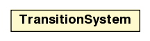

jason.asSemantics
Class TransitionSystem

java.lang.Object
 jason.asSemantics.TransitionSystem
jason.asSemantics.TransitionSystem
public class TransitionSystem
- extends java.lang.Object
| Methods inherited from class java.lang.Object |
clone, equals, finalize, getClass, hashCode, notify, notifyAll, wait, wait, wait |
TransitionSystem
public TransitionSystem(Agent a,
Circumstance c,
Settings s,
AgArch ar)
setLogger
public void setLogger(AgArch arch)
setLogger
public void setLogger(java.util.logging.Logger l)
addGoalListener
public void addGoalListener(GoalListener gl)
- adds an object that will be notified about events on goals (creation, suspension, ...)
hasGoalListener
public boolean hasGoalListener()
getGoalListeners
public java.util.List<GoalListener> getGoalListeners()
removeGoalListener
public boolean removeGoalListener(GoalListener gl)
applyClrInt
public void applyClrInt(Intention i)
throws JasonException
- Throws:
JasonException
relevantPlans
public java.util.List<Option> relevantPlans(Trigger teP)
throws JasonException
- Throws:
JasonException
applicablePlans
public java.util.List<Option> applicablePlans(java.util.List<Option> rp)
throws JasonException
- Throws:
JasonException
updateEvents
public void updateEvents(java.util.List<Literal>[] result,
Intention focus)
updateEvents
public void updateEvents(Event e)
generateGoalDeletion
public boolean generateGoalDeletion(Intention i,
java.util.List<Term> failAnnots)
throws JasonException
- generate a failure event for an intention
- Throws:
JasonException
findEventForFailure
public Event findEventForFailure(Intention i,
Trigger tevent)
canSleep
public boolean canSleep()
runAtBeginOfNextCycle
public void runAtBeginOfNextCycle(java.lang.Runnable r)
- Schedule a task to be executed in the begin of the next reasoning cycle.
It is used mostly to change the C only by the TS thread (e.g. by .wait)
reasoningCycle
public void reasoningCycle()
getAg
public Agent getAg()
getC
public Circumstance getC()
getStep
public TransitionSystem.State getStep()
getSettings
public Settings getSettings()
getUserAgArch
public AgArch getUserAgArch()
getLogger
public java.util.logging.Logger getLogger()
toString
public java.lang.String toString()
- Overrides:
toString in class java.lang.Object